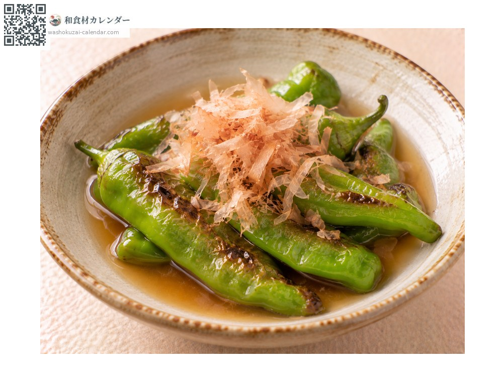
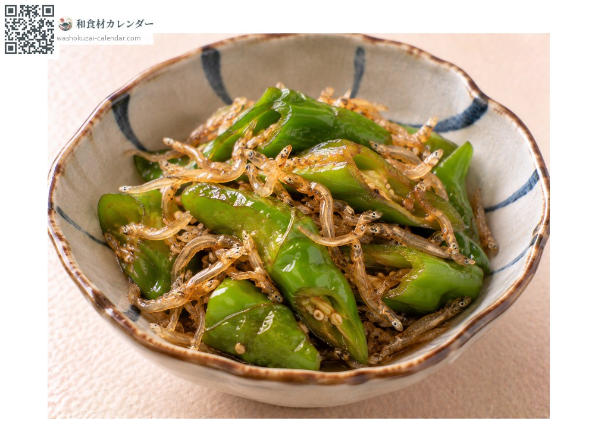
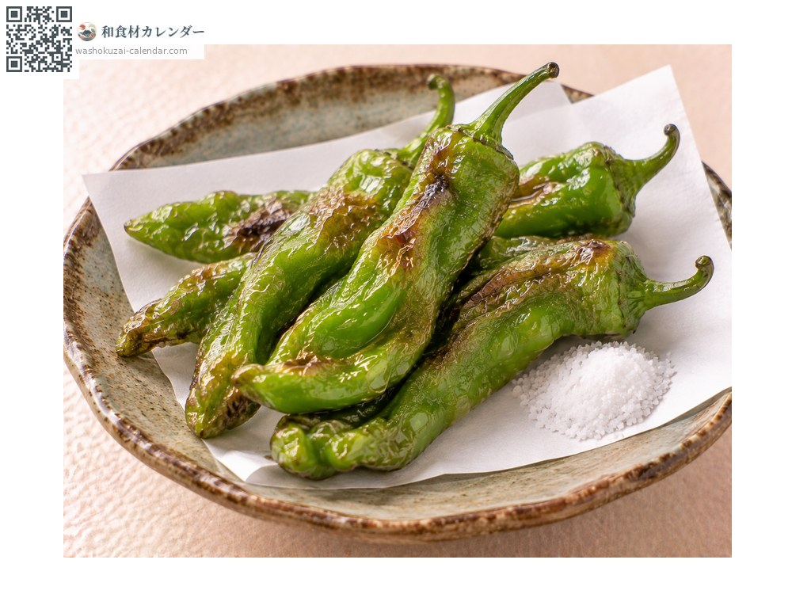
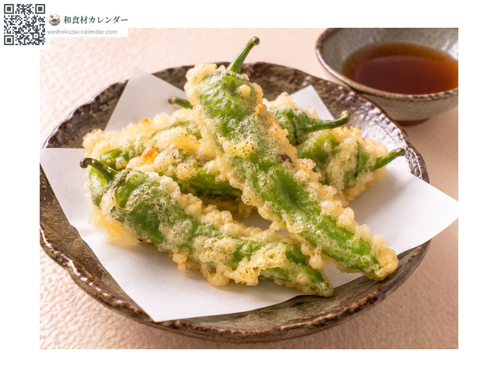

ผัก
พริกมังกันจิ
万願寺とうがらし まんがんじとうがらし manganjitogarashi
ชื่ออื่นmanganjitogarashi, manganjitougarashi, manganji
อร่อยที่สุดในเดือน มิ.ย., ก.ค., ส.ค.

ช่วงที่อร่อยที่สุด
ม.ค.
ก.พ.
มี.ค.
เม.ย.
พ.ค.
มิ.ย.
ก.ค.
ส.ค.
ก.ย.
ต.ค.
พ.ย.
ธ.ค.
ช่วงอร่อยที่สุดมีจำหน่าย
วิธีปรุง

ยากิบิตาชิ
ย่างแล้วแช่น้ำดาชิ ความหอมไหม้จะติดมาด้วย

ตุ๋นกับปลาแห้งตัวเล็ก
ตุ๋นรสหวานเค็มกับปลาจิริเมง เป็นเมนูประจำเกียวโต

ทอดไม่ชุบแป้ง
ทอดทั้งลูกแล้วโรยเกลือ เนื้อหนาและกินอิ่ม

เทมปุระ
ชุบแป้งทอด เจาะรูก่อนเพื่อไม่ให้ระเบิด
วิธีเลือก
เขียวเข้มเป็นมันวาว เนื้อหนาและตรง รอยตัดที่ขั้วใหม่
วิธีเก็บรักษา
ใส่ถุงแช่เย็น ใช้ภายใน 3-4 วัน
แหล่งผลิตหลัก
เกร็ดน่ารู้
เป็นผักเกียวโตจากย่านมังกันจิ เมืองไมซูรุ เกิดจากการผสมพริกฟุชิมิกับพันธุ์แคลิฟอร์เนียในยุคไทโช ยาวราวสิบห้าเซนติเมตรและเนื้อหนา แทบไม่เผ็ดและมีความหวาน จึงได้ฉายาว่าราชาแห่งพริก